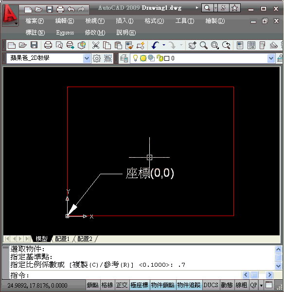

<div class="callout callout--note"><b>問題</b>別人圖上的 X 及 Y 標示圖型不見了，是如何作到的？還有要如何讓 X 及 Y 的圖示固定在視窗的左下角，不隨著 0,0 點的出現而在圖面移動？</div>
<ul class="step-list"><li><div class="step-num">1</div><div>使用 <b>UCSICON</b> 指令，控制 UCS 圖示的可見性和位置，透過選項 [打開(ON)/關閉(OFF)] 來開關 UCS 圖示。</div></li><li><div class="step-num">2</div><div>使用 <b>UCSICON</b> 指令，控制 UCS 圖示的顯示圖示位置，透過選項 [無原點(N)/原點(OR)] 來顯示 UCS 圖示位置。</div></li></ul>

<div class="callout callout--tip"><b>補充</b>也可以使用「性質」顯示「UCS 圖示」對話方塊，讓您控制 UCS 圖示的型式、可見性和位置。</div>
